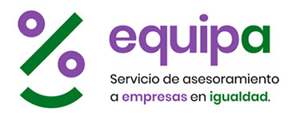

1. Protección de Datos.
En cumplimiento de lo dispuesto en la Ley Orgánica 15/1999, de 13 de diciembre, de Protección de Datos de Carácter Personal, el Instituto Andaluz de la Mujer informa que los datos personales obtenidos mediante la cumplimentación del formulario “Crea el protocolo de tu empresa” en la web CKL/Enreda Implementación de la herramienta digital “Crea el protocolo de tu empresa” v6 - abril 2018 3 van a ser incorporados, para su tratamiento en el fichero “Actividades y actuaciones gestionados por el Servicio de Formación y Empleo de Mujeres del Instituto Andaluz de la Mujer”. Dicho fichero está publicado en la Orden de 19 de noviembre de 2012, por la que se regulan los ficheros de carácter personal gestionados por el Instituto Andaluz de la Mujer (BOJA, núm. 7, de 10 de enero de 2013), según lo previsto en el artículo 20 de la Ley Orgánica 15/1999, de 13 de diciembre, de Protección de Datos de Carácter Personal.
2. Otros datos.
Con respecto a los datos que las entidades o personas usuarias graben en la web se tendrá una política de total confidencialidad en su uso y tratamiento, no pudiéndose usar, ni explotar sin permiso expreso de quienes se hayan registrado y grabado los mismos.
3. Propiedad intelectual.
Los derechos de propiedad intelectual de la web de la herramienta del EQUIPA (Servicio de Asesoramiento a Empresa en Igualdad, del Instituto Andaluz de la Mujer) de CREA EL PROTOCOLO DE TU EMPRESA son del Instituto Andaluz de la Mujer. La reproducción, distribución, comercialización o transformación no autorizadas de estas obras constituye una infracción de los derechos de propiedad intelectual.
© Copyrignt 2017. Junta de Andalucía.